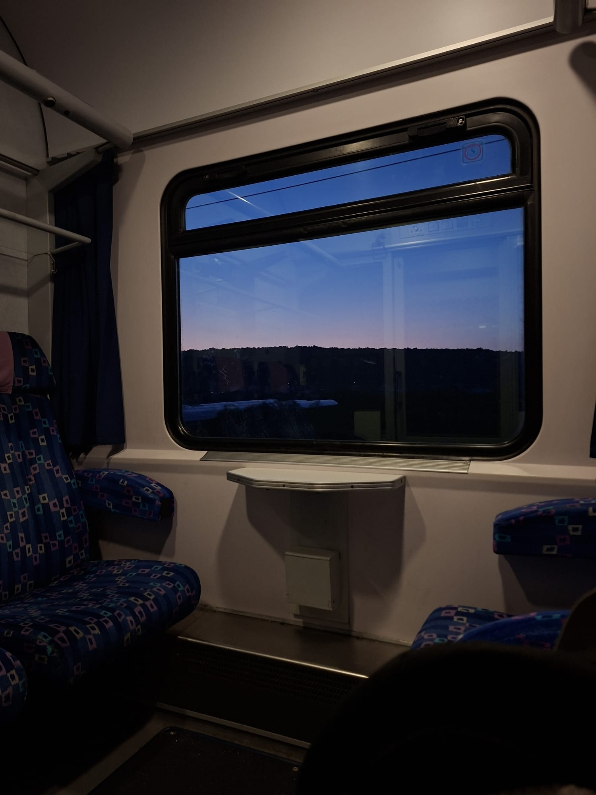
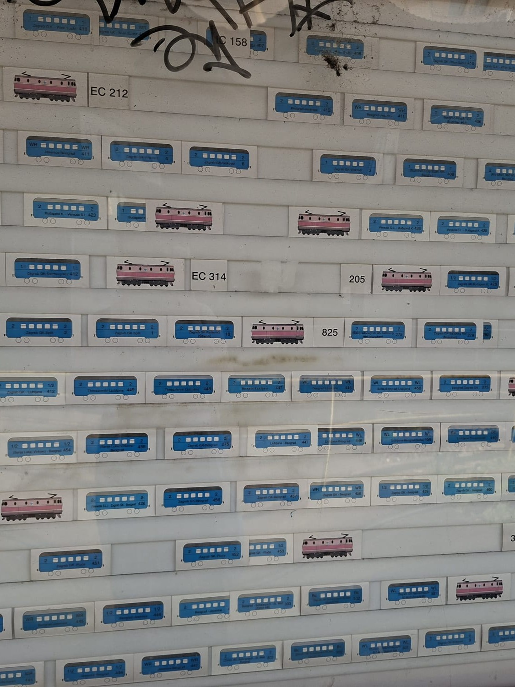
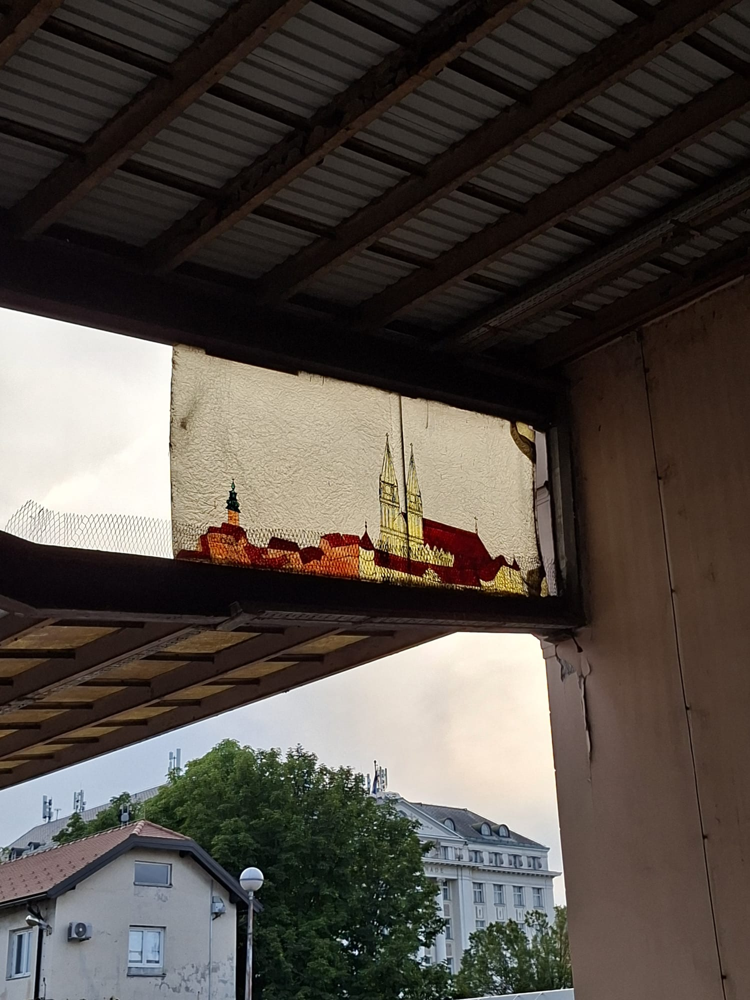
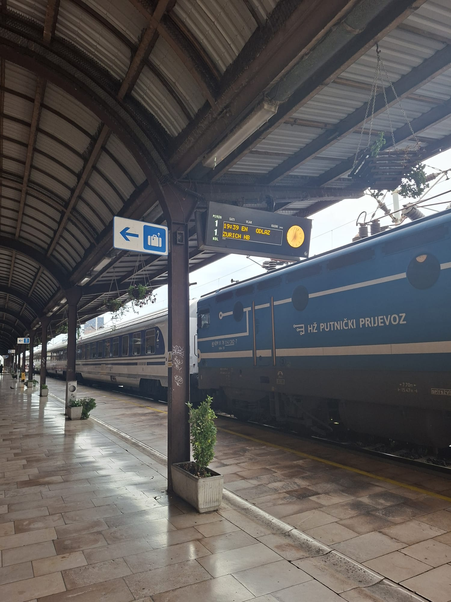
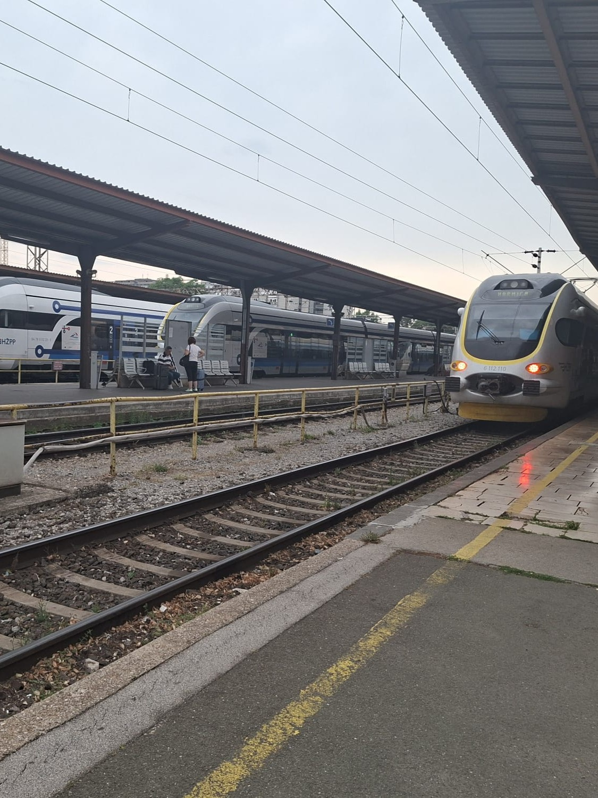
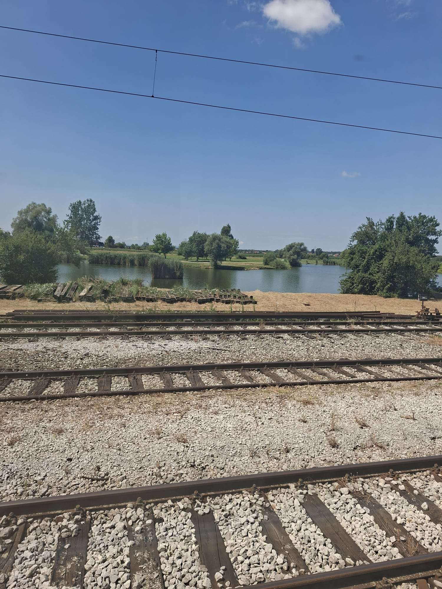
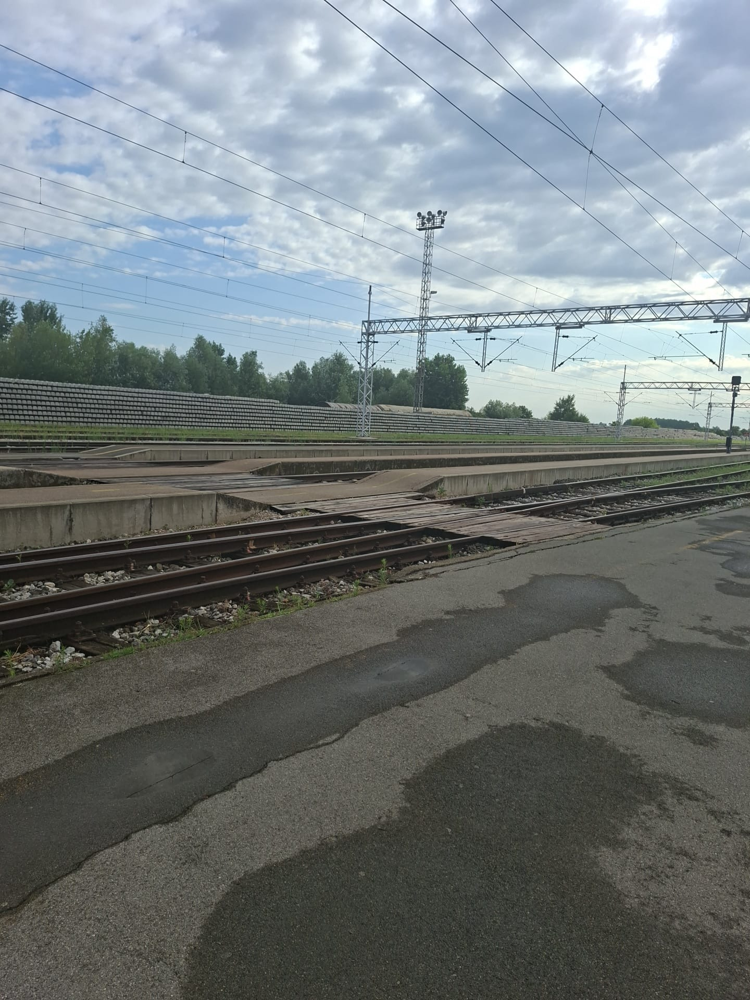
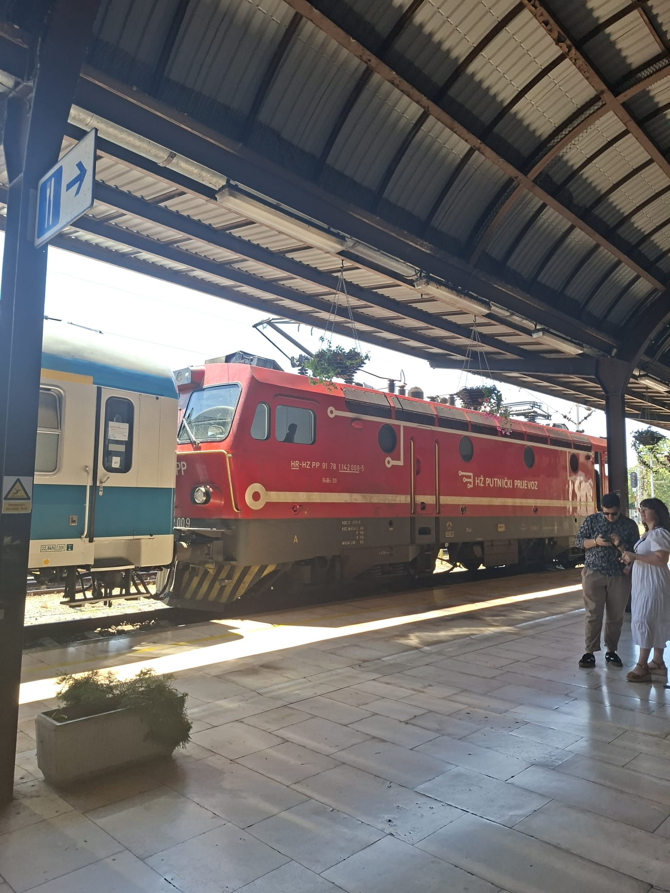

Zagreb - July 2026
This was a short trip to the capital of my country, not vacation, but I had fun nonetheless!
Travel path
- Morning departure from Osijek toward Strizivojna-Vrpolje
- Strizivojna-Vrpolje to Zagreb Glavni Kolodvor on the Eurocity 210 "Sava"
And the same route back!
What I did in Zagreb
I was in Zagreb for a week for work, but I did fortunately have some free time in the afternoons, and I was within a very comfortable walking distance from the train station, which you can imagine I much enjoyed. Beneath the train station is a small mall, so I made a little ritual of grabbing ice cream or a muffin after work, and sitting down for some train watching! Here is what I saw:
- Many Končar EMUs, specifically in the suburban (blue-white) livery. Common as they are, I rarely see them in person, since Osijek does not have electrified rails!
- A slightly smaller amount of Končar DMUs and/or EMUs fitted for regional services
- The EuroNight 40414 "Zürichsee" that journeys between Zagreb and Zürich HB. This service is pretty high up on my list of trains I'd like to take, alas, I shall only look at it for now! I didn't plan to go watch this one, so I was very happy to come by it on accident nonetheless
- Not one "bluey", much to my enjoyment
Photo gallery







